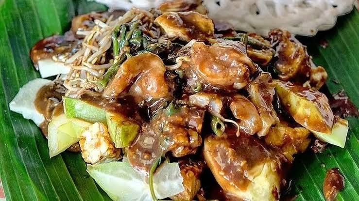

Rujak Cingur
Rujak cingur is a traditional Surabayan dish made with fruits, vegetables, tofu, tempeh, and sliced cow snout. It is served with a thick sauce made from petis, peanuts, and chili. The combination creates a unique sweet, savory, and spicy flavor.